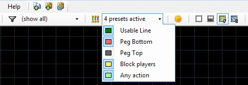
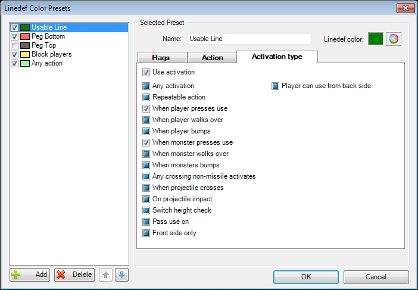

你可以创建自定义线段颜色预设，以便在 2D 模式下以指定颜色显示具有任意动作、标志和激活方式组合的线段。
你可以使用主工具栏上的下拉菜单选择要应用的预设。
当下拉菜单展开时，按住 Shift 可以一次切换多个项目。

技术说明：颜色预设按从上到下的顺序求值，因此如果你有如下设置：
"任意动作" [无标志] [任意动作] [无激活]
"斜面" [无标志] [动作 181] [无激活]
那么 "斜面" 预设将永远不会被使用。
